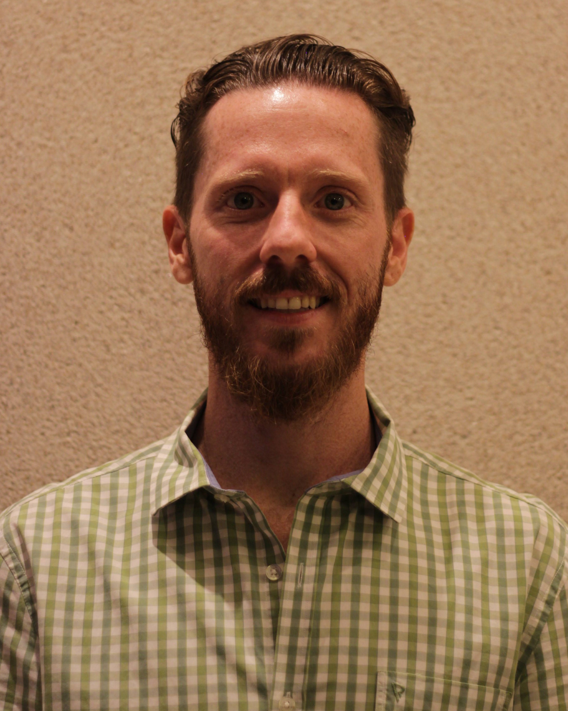
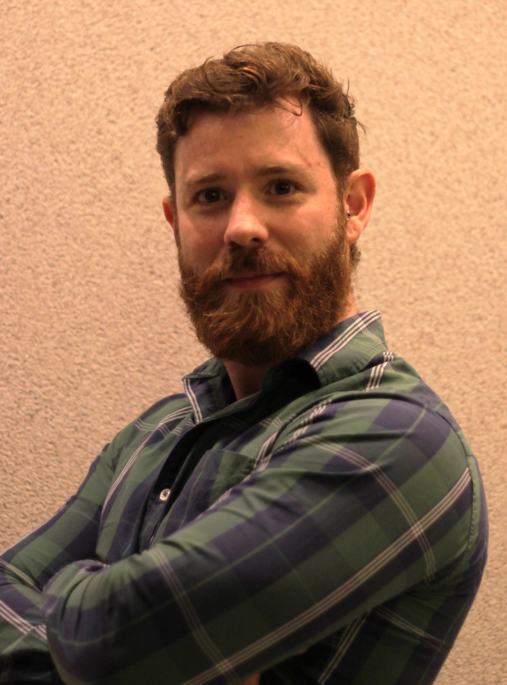
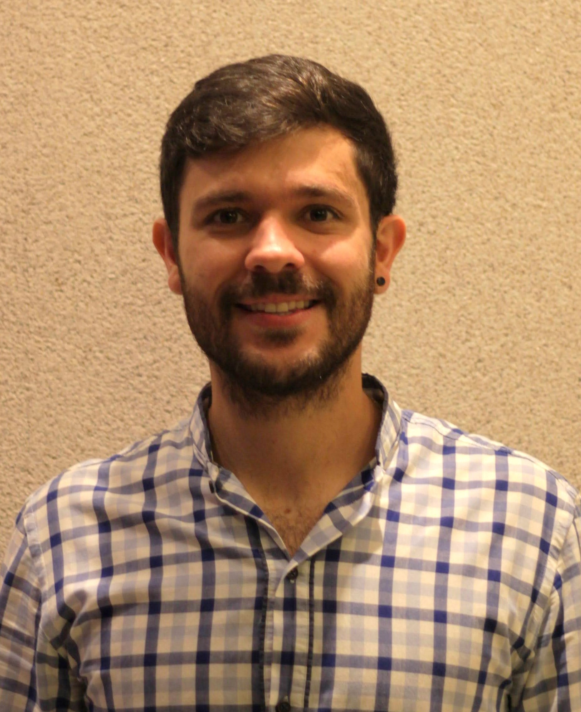

Trabalhamos com entregas de frutas, legumes e verduras para restaurantes e vendas presenciais para o público geral, sempre prezando o bom atendimendo ao cliente, excelência na qualidade dos nossos produtos e rapidez no fornecimento das mercadorias.
Nossos produtos são produzidos em nossas propriedades, contando com verduras cultivadas em hidroponia, o que garante o melhor aproveitamento dos recursos hídricos e mantêm a qualidade das nossas mercadorias mais estável durante todo o ano.
Produtos frescos!
Fornecemos produtos frescos com qualidade e preço justo em mercadorias cultivadas com tecnologias atuais garantindo maior nível de excelência!
Sobre nós
Somos uma empresa familiar especializada em fornecer produtos de qualidade tanto para restaurantes quanto para o público geral. Nossa loja física se localiza no Ceasa de São José Do Rio Preto e já opera há mais de 50 anos, sempre garantindo excelência e preços justos aos nossos clientes.
Atualmente fornecemos produtos para restaurantes renomados na cidade, além de contarmos com uma clientela fiel dos nossos serviços no Ceasa. Nossos produtos são produzidos em nossas instalações próprias ou provenientes do Ceagesp de São Paulo, o que garante uma variedade e qualidade de alto padrão para a nossa empresa.
Quem somos
Somos uma empresa familiar que atua no mercado de distribuição de alimentos há diversos anos, a empresa já corre na família há três gerações sendo fundada há mais de 50 por Juraci Carvalho e atualmente é administrada por Valdir Carvalho e sua família.
Conheça nossa equipe!
Assista essa reportagem a qual demos devido ao nosso destaque na produção de hidropônicos!

João Gabriel Carvalho (+55)17 99747-7170

Renato Carvalho: (+55) 17 99725-6450

Guilherme Carvalho: (+55) 17 99675-1701
Localização
Av. João Batista Vetorasso, nº805 - Distrito Industrial, São José do Rio Preto - SP, 15035-470